Kiến trúc Hybrid: Sự kết hợp hoàn hảo giữa Supabase và Spring Boot
Đăng ngày 14 January 2026
Thay vì phải lựa chọn giữa sự đơn giản của Supabase và sức mạnh của Spring Boot, tại sao không kết hợp cả hai? Hãy cùng khám phá một kiến trúc hybrid tận dụng những ưu điểm tốt nhất của mỗi công nghệ.
- mục lục
-
[]
- Tiến thoái lưỡng nan giả tạo của Kiến trúc Hiện đại
- Tầm nhìn Kiến trúc
- Nguyên tắc Thiết kế
- Điều phối Luồng
- Ma trận Quyết định
- Ví dụ về Kiến trúc theo Loại Dự án
- Chiến lược Di chuyển Tịnh tiến
- Chi phí và Xem xét Vận hành
- Kết luận: Sự Cân Bằng Hoàn Hảo
- Tìm hiểu thêm
- Triển vọng Phát triển
- Minh chứng Kiến trúc
- Tổng hợp: Một Mô hình Kiến trúc Hiện đại
- Kết luận cuối cùng
Tiến thoái lưỡng nan giả tạo của Kiến trúc Hiện đại
Khi xây dựng một ứng dụng hiện đại với frontend tĩnh, chúng ta thường phải đối mặt với một lựa chọn nhị phân:
-
Đặt cược tất cả vào một giải pháp Backend-as-a-Service(Supabase, Firebase) - đơn giản nhưng hạn chế
-
Xây dựng một backend hoàn chỉnh(Spring Boot, Node.js) - mạnh mẽ nhưng phức tạp
Lựa chọn này là một tình thế tiến thoái lưỡng nan giả tạo. Kiến trúc hybrid đề xuất một con đường thứ ba: sử dụng mỗi công nghệ ở nơi mà nó ưu việt nhất.
Tầm nhìn Kiến trúc
Kiến trúc Truyền thống: Monolithique
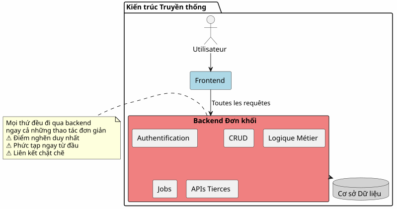
Trong cách tiếp cận này, ngay cả những thao tác đơn giản nhất (đọc một bài viết, tạo một bình luận) cũng phải đi qua backend của bạn. Bạn phải trả giá cho sự phức tạp ngay từ ngày đầu tiên.
Kiến trúc BaaS: Ủy thác toàn bộ
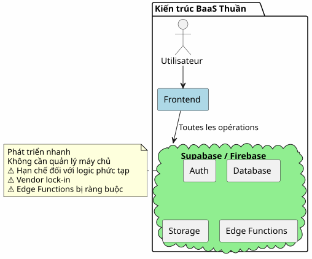
Ngược lại, việc ủy thác tất cả cho một BaaS ban đầu rất hấp dẫn nhưng sẽ nhanh chóng bộc lộ những hạn chế ngay khi logic nghiệp vụ trở nên phức tạp hơn.
Kiến trúc Hybrid: Tách biệt Trách nhiệm
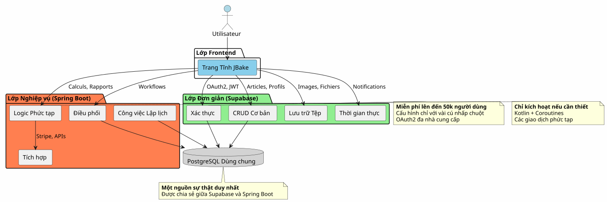
Kiến trúc hybrid phân tách rõ ràng các trách nhiệm tùy theo độ phức tạp và bản chất của các thao tác.
Nguyên tắc Thiết kế
Nguyên tắc 1: Bắt đầu Đơn giản, Phát triển Thông minh
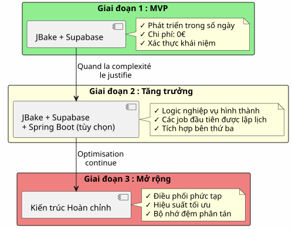
Đừng xây dựng Spring Boot nếu bạn không cần đến nó.Bắt đầu với Supabase, thêm Spring Boot khi độ phức tạp đòi hỏi điều đó.
Nguyên tắc 2: Tách biệt theo Bản chất Giao dịch

Nguyên tắc 3: Một Nguồn Sự Thật Duy Nhất
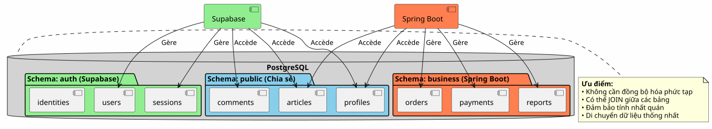
Bằng cách chia sẻ cùng một instance PostgreSQL, Supabase và Spring Boot làm việc trên cùng một tập dữ liệu mà không cần đồng bộ hóa phức tạp.
Điều phối Luồng
Luồng 1: Xác thực tập trung
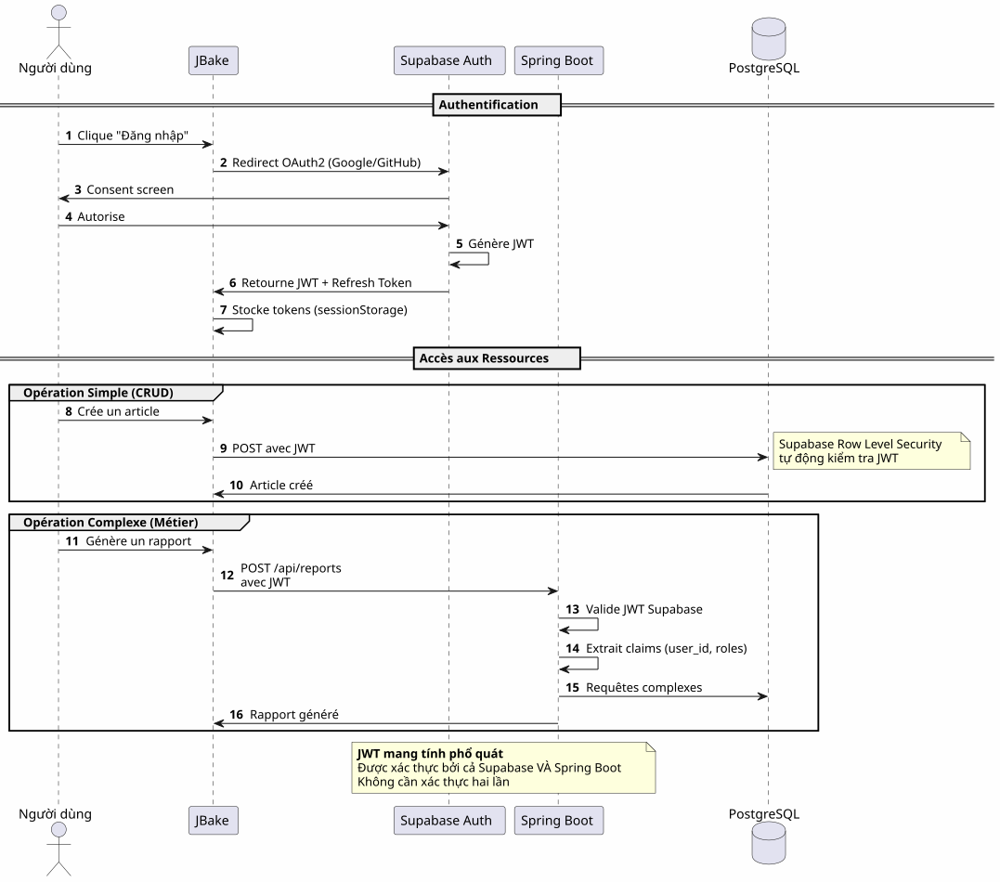
Điểm mấu chốt: Một quy trình xác thực duy nhất, một JWT duy nhất, có thể sử dụng ở mọi nơi.
Flux 2 : Điều phối một Quy trình Nghiệp vụ Phức tạp
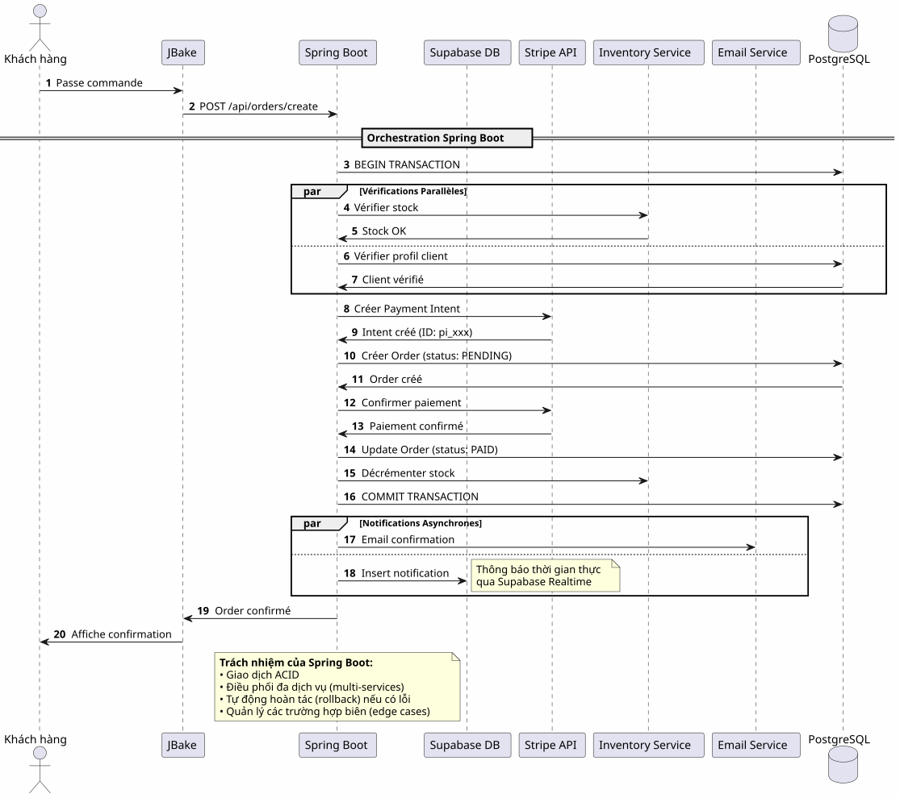
Những gì Spring Boot mang lại: Điều phối đáng tin cậy các quy trình phức tạp liên quan đến nhiều hệ thống với đảm bảo giao dịch.
Flux 3 : Các Job Lập lịch và Đồng bộ hóa
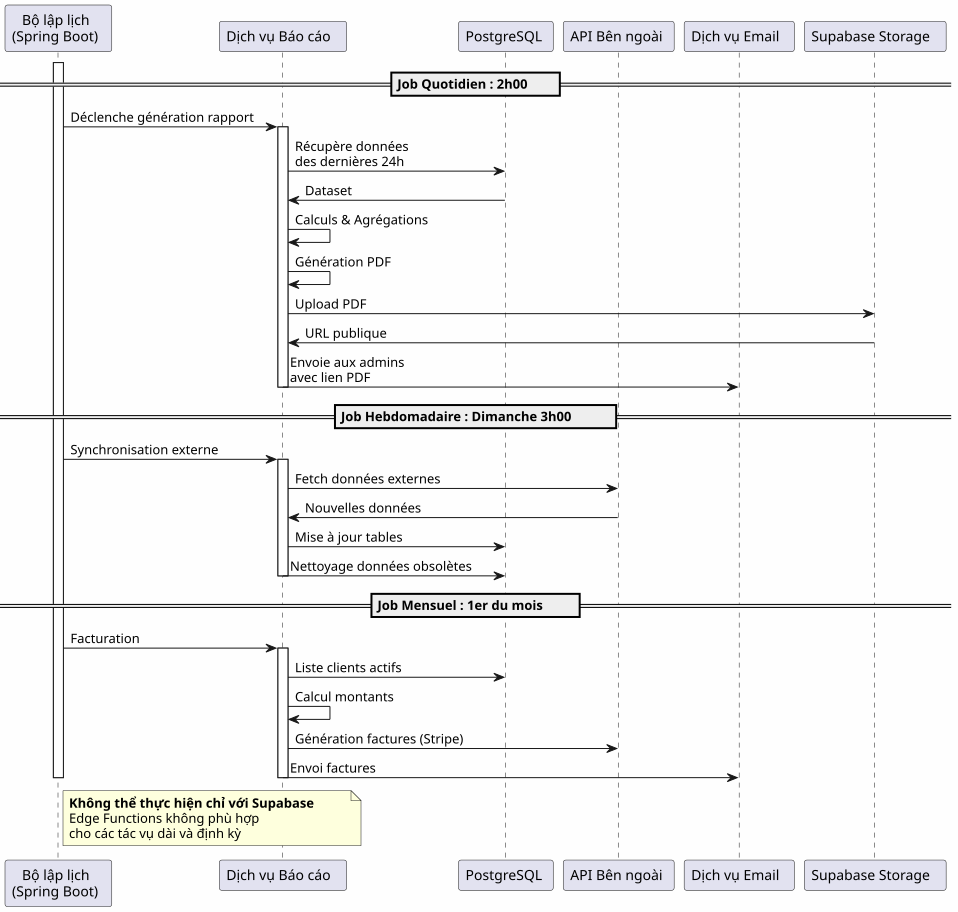
Những gì Spring Boot mang lại: Các job lập lịch đáng tin cậy với quản lý trạng thái, tự động thử lại (retry) và đảm bảo thực thi.
Ma trận Quyết định
Khi nào nên sử dụng Supabase?

Khi nào nên sử dụng Spring Boot?

Ví dụ về Kiến trúc theo Loại Dự án
Blog / Portfolio
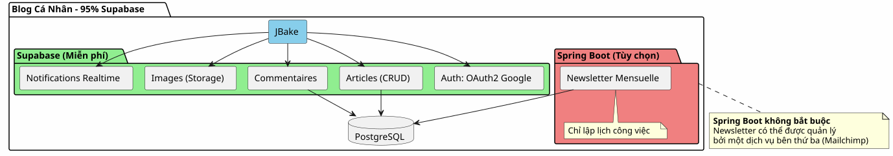
Phán quyết: 100% Supabase là quá đủ.
Ứng dụng SaaS
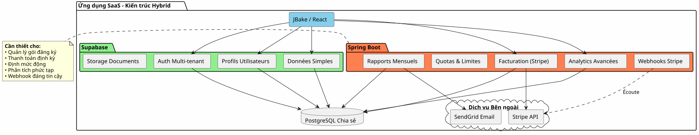
Phán quyết: Cần kiến trúc hybrid. Supabase cho các phần cơ bản, Spring Boot cho phần quan trọng (thanh toán, lập hóa đơn).
Thương mại điện tử
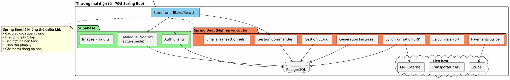
Phán quyết: Spring Boot là bắt buộc. Supabase chỉ dùng cho auth và catalogue.
Chiến lược Di chuyển Tịnh tiến
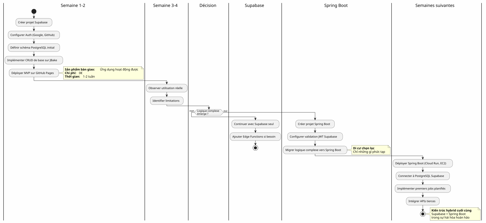
Chi phí và Xem xét Vận hành
Cấu trúc Chi phí
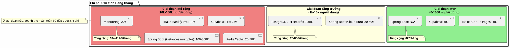
Trách nhiệm Vận hành
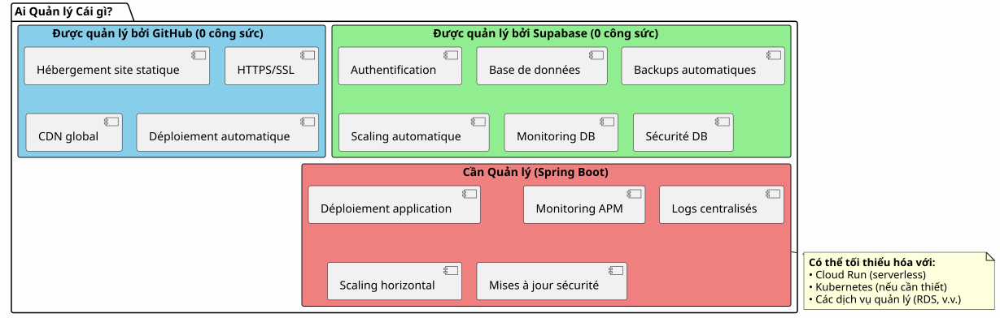
Kết luận: Sự Cân Bằng Hoàn Hảo
Kiến trúc hybrid Supabase + Spring Boot không phải là một sự thỏa hiệp, mà là mộtsự hiệp lựcVui lòng cung cấp văn bản tiếng Pháp cần dịch.
Các Nguyên Tắc Cần Ghi Nhớ

Khi Nào Nên Chọn Kiến Trúc Này?
✅ Kiến trúc này là lý tưởng nếu:
-
Bạn muốn khởi động nhanh chóng (MVP tính bằng ngày, không phải bằng tháng)
-
Bạn dự báo sự gia tăng về độ phức tạp của nghiệp vụ
-
Bạn muốn giảm thiểu chi phí ban đầu
-
Bạn yêu thích PostgreSQL và muốn có một nguồn sự thật duy nhất
-
Bạn yêu thích Kotlin và Coroutines cho mã nguồn nghiệp vụ
-
Bạn muốn tránh tình trạng bị vendor lock-in hoàn toàn
❌ Kiến trúc này KHÔNG phù hợp nếu:
-
Dự án của bạn đơn giản và sẽ tiếp tục như vậy (blog cá nhân → 100% Supabase là đủ)
-
Bạn đã có một stack backend thiết lập sẵn mà bạn thành thạo
-
Bạn thích một khối đơn khối truyền thống hơn
-
Bạn cần .NET, Python, hoặc ngôn ngữ khác ở phía backend
Tổng quan Cuối cùng
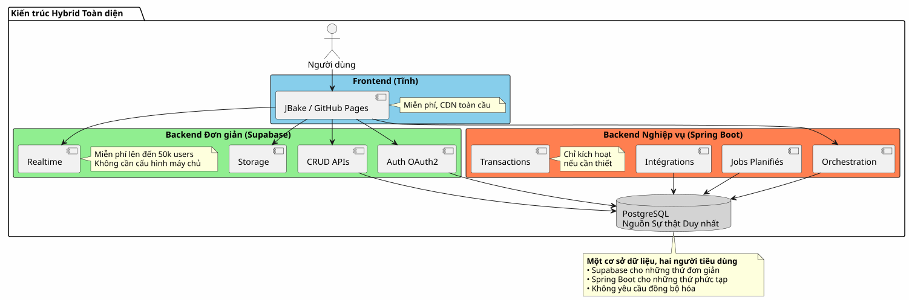
Điều Tốt Nhất Của Cả Hai Thế Giới
Kiến trúc này cung cấp cho bạn:
🚀 Tốc độ của Supabase
-
Khởi động trong vài giờ, không phải vài tuần
-
Xác thực OAuth2 chỉ với vài cú nhấp chuột
-
Các API REST được tạo tự động
-
Không cần cấu hình máy chủ
💪 Sức mạnh của Spring Boot
-
Kotlin và Coroutines cho mã bất đồng bộ thanh thoát
-
Điều phối các quy trình kinh doanh phức tạp
-
Các tác vụ lập lịch đáng tin cậy
-
Đảm bảo giao dịch ACID
-
Hệ sinh thái Spring toàn diện
💰 Nền Kinh tế Tiến bộ
-
0€ để bắt đầu và xác nhận
-
Chi phí tăng theo tăng trưởng
-
Không thiết kế quá mức sớm (no premature over-engineering)
🎯 Tính Linh hoạt của Kiến trúc
-
Di cư dần dần không cần tái thiết kế
-
Thêm Spring Boot chỉ khi cần thiết
-
Không bị khóa chặt hoàn toàn vào nhà cung cấp (vendor lock-in)
-
Kiến trúc có khả năng mở rộng
Tìm hiểu thêm
Tài nguyên Kỹ thuật
Tài liệu Supabase:
Tài liệu Spring Boot :
Bài viết Bổ sung:
-
Bảo mật API với JWT
-
Tối ưu hóa hiệu suất PostgreSQL
-
Các mẫu di cư lũy tiến
-
Quản lý lỗi trong kiến trúc phân tán
Các Trường Hợp Sử Dụng Thực Tế
Kiến trúc hybrid này được sử dụng thành công trong:
-
SaaS B2B: Xác thực Supabase, thanh toán Spring Boot
-
Sàn thương mại điện tử: Danh mục Supabase, giao dịch Spring Boot
-
Nền tảng nội dung: Các bài viết về Supabase, analytics Spring Boot
-
Công cụ nội bộ: CRUD Supabase, workflows Spring Boot
Danh sách kiểm tra khởi động
Giai đoạn 1 - Nền móng (Tuần 1)
-
Tạo tài khoản Supabase - [ ] Cấu hình dự án PostgreSQL - [ ] Kích hoạt Auth (Google, GitHub) - [ ] Định nghĩa sơ đồ ban đầu - [ ] Cấu hình Row Level Security - [ ] Kiểm tra các API từ JBake
Giai đoạn 2 - MVP (Tuần 2-3)
-
Triển khai các trang chính - [ ] Tích hợp xác thực OAuth2 - [ ] Tạo các biểu mẫu CRUD - [ ] Cấu hình Storage cho các tệp tin - [ ] Triển khai lên GitHub Pages - [ ] Kiểm tra trong điều kiện thực tế
Giai đoạn 3 - Phát triển (Theo nhu cầu)
-
Xác định các nhu cầu về logic phức tạp - [ ] Tạo dự án Spring Boot nếu cần thiết - [ ] Cấu hình xác thực JWT Supabase - [ ] Kết nối với PostgreSQL Supabase - [ ] Di chuyển các tính năng phức tạp - [ ] Triển khai các job lập lịch - [ ] Triển khai Spring Boot (Cloud Run, v.v.)
Các Anti-Pattern cần tránh
❌ Không được làm:
-
Sao chép dữ liệu giữa Supabase và Spring Boot
-
Tạo hai cơ sở dữ liệu PostgreSQL riêng biệt
-
Tự viết mã xác thực
-
Sử dụng Spring Boot cho CRUD đơn giản
-
Thiết kế quá mức ngay từ đầu
-
Bỏ qua Row Level Security của Supabase
✅ Thay vào đó hãy làm:
-
Chia sẻ một cơ sở dữ liệu PostgreSQL duy nhất
-
Để Supabase quản lý xác thực
-
Chỉ sử dụng Spring Boot cho những phần phức tạp
-
Bắt đầu đơn giản, phát triển dần dần
-
Khai thác thế mạnh của mỗi công nghệ
-
Bảo mật với RLS ở cấp độ cơ sở dữ liệu
Triển vọng Phát triển
Thêm các Khả năng Mới
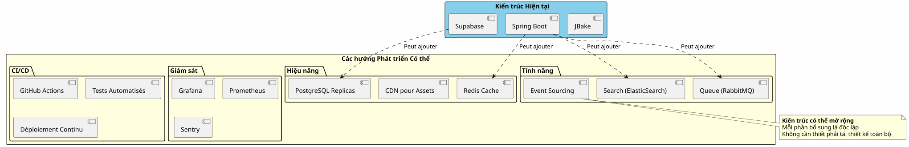
Mở rộng theo chiều ngang
Khi ứng dụng của bạn phát triển, kiến trúc hybrid sẽ mở rộng một cách tự nhiên:
Supabase :
-
Tự động mở rộng quy mô lên đến hàng triệu thao tác
-
Read replicas để tăng hiệu suất đọc
-
Phục hồi tại một thời điểm (Point-in-time recovery) để bảo mật
Spring Boot :
-
Nhiều instance phía sau load balancer
-
Thiết kế Stateless tạo điều kiện cho việc scaling horizontal
-
Kubernetes để điều phối nếu cần thiết
PostgreSQL :
-
Phân vùng cho các bảng có dung lượng lớn
-
Nhóm kết nối (PgBouncer)
-
Sharding nếu thực sự cần thiết (hiếm)
Minh chứng Kiến trúc
Startup SaaS (50k người dùng)
Vui lòng cung cấp văn bản cần dịch. Chúng tôi đã khởi đầu với 100% Supabase. Khi đạt 5k người dùng, chúng tôi đã thêm Spring Boot chỉ để phục vụ việc lập hóa đơn Stripe và các báo cáo hàng tháng. Một năm sau, 80% các hoạt động của chúng tôi vẫn thông qua Supabase. Spring Boot chỉ quản lý phần quan trọng. Sự phân tách này đã cho phép chúng tôi mở rộng quy mô mà không cần tái cấu trúc. Vui lòng cung cấp văn bản cần dịch.
Nền tảng E-learning (10k người dùng)
Vui lòng cung cấp văn bản cần dịch. Xác thực OAuth2 của Supabase đã giúp chúng tôi tiết kiệm được 3 tuần phát triển. Các API tự động tạo quản lý toàn bộ danh mục khóa học của chúng tôi. Spring Boot chỉ được dùng cho các chứng chỉ PDF và email thông báo tiến độ. Kiến trúc đơn giản, dễ bảo trì và có khả năng mở rộng. Vui lòng cung cấp nội dung cần dịch.
Marketplace B2B (3k người dùng)
Vui lòng cung cấp nội dung cần dịch. Spring Boot quản lý các giao dịch giữa người mua và người bán (quan trọng). Supabase quản lý tất cả những phần còn lại: hồ sơ, nhắn tin thời gian thực, tài liệu. Việc cả hai cùng chia sẻ một cơ sở dữ liệu PostgreSQL giúp chúng tôi tránh được mọi quá trình đồng bộ hóa phức tạp. Lựa chọn kiến trúc tốt nhất mà chúng tôi từng thực hiện. Vui lòng cung cấp văn bản cần dịch.
Tổng hợp: Một Mô hình Kiến trúc Hiện đại
Kiến trúc hybrid Supabase + Spring Boot đại diện cho một mô hình mới:sự chuyên môn hóa về kiến trúcVì bạn chưa cung cấp nội dung cần dịch, vui lòng gửi văn bản tiếng Pháp mà bạn muốn chuyển sang tiếng Việt.
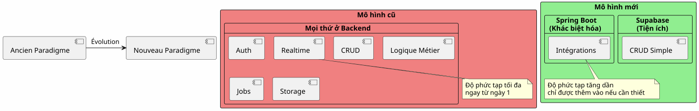
Nguyên tắc cơ bản:Đừng xây dựng những gì đã tồn tại dưới dạng dịch vụ. Hãy tập trung vào những điểm tạo nên sự khác biệt cho ứng dụng của bạn.
Quy tắc 80/20
Trong hầu hết các ứng dụng:
-
80% các hoạt độnglà các CRUD tiêu chuẩn → Supabase
-
20% các hoạt độngyêu cầu logic nghiệp vụ → Spring Boot
Quy luật tự nhiên này lý giải cho kiến trúc hybrid.
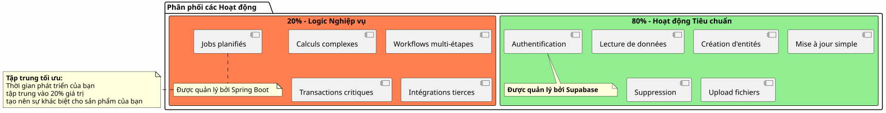
Kết luận cuối cùng
Kiến trúc hybrid không phải là một sự thỏa hiệp về kỹ thuật, mà là mộtquyết định chiến lượcVui lòng cung cấp văn bản tiếng Pháp cần dịch.
Nó cho phép bạn:
-
✅ Bắt đầu nhanh chóng với một MVP hoạt động được
-
✅ Xác thực thị trường của bạn mà không cần đầu tư lớn
-
✅ Phát triển dần dần khi độ phức tạp yêu cầu
-
✅ Kiểm soát chi phí của bạn ở mọi giai đoạn
-
✅ Khai thác tối đa thế mạnh của mỗi công nghệ
-
✅ Tránh việc thiết kế quá mức (over-engineering) sớm
-
✅ Duy trì sự linh hoạt cho tương lai
Nó đại diện cho:
-
🎯Chủ nghĩa thực dụng: Mỗi công nghệ mà cô ấy/nó xuất sắc
-
🚀Vận tốc: Thời gian đưa ra thị trường tối thiểu
-
💰Kinh tế: Chi phí căn chỉnh theo giá trị
-
🔮Khả năng mở rộng: Kiến trúc phát triển cùng bạn
-
🛡️Độ bền bỉ: Các dịch vụ đã được kiểm chứng và đáng tin cậy
Bước Tiếp Theo Của Bạn
Nếu kiến trúc này phù hợp với bạn, đây là nơi để bắt đầu:
-
Tạo tài khoản Supabase(miễn phí)
-
Hãy xác định lược đồ dữ liệu tối thiểu của bạn
-
Cấu hình xác thực OAuth2
-
Hãy tạo trang JBake đầu tiên của bạn có tiêu thụ API
-
Triển khai trên GitHub Pages
Bạn sẽ có một MVP hoàn chỉnh trongvài ngàyVui lòng cung cấp văn bản cần dịch.
Spring Boot sẽ đến một cách tự nhiên khi bạn cần đến nó. Không sớm hơn.
Kiến trúc hybrid là nghệ thuật xây dựng chính xác những gì cần thiết, vào đúng thời điểm cần thiết.
Chúc bạn phát triển thuận lợi! 🚀
Hãy chia sẻ bài viết này nếu bạn nghĩ rằng nó có thể giúp các nhà phát triển khác đưa ra những lựa chọn kiến trúc đúng đắn.